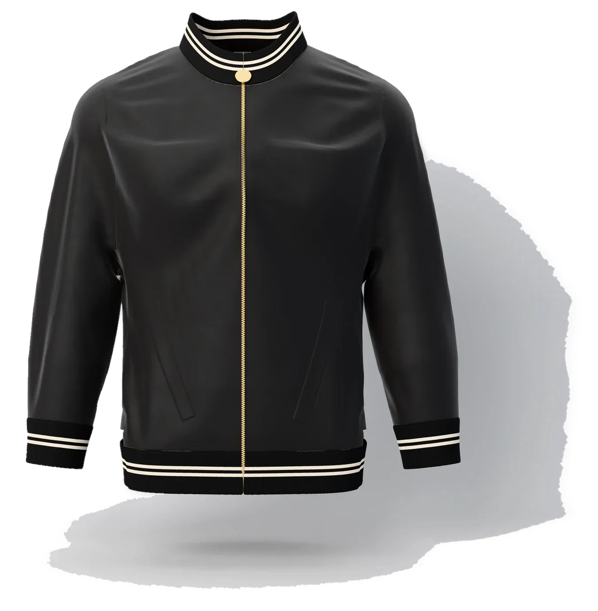
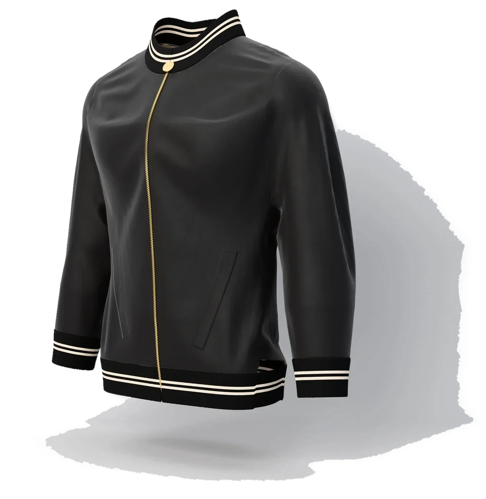
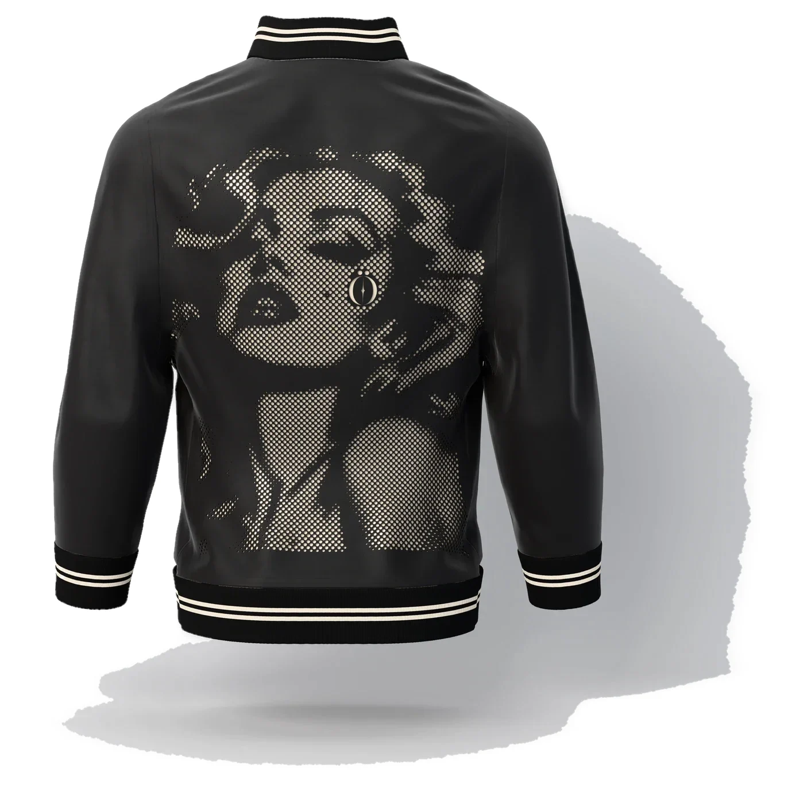
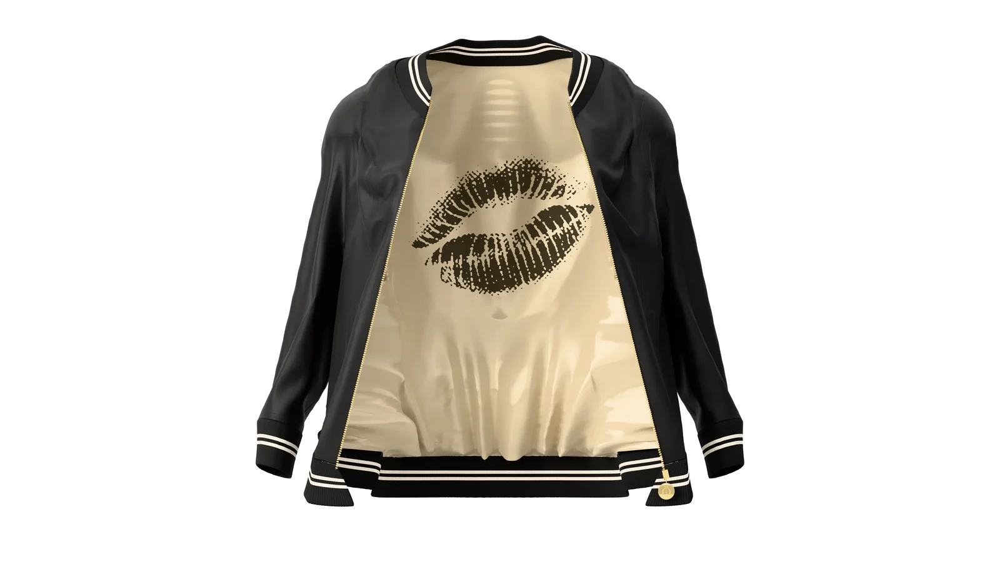
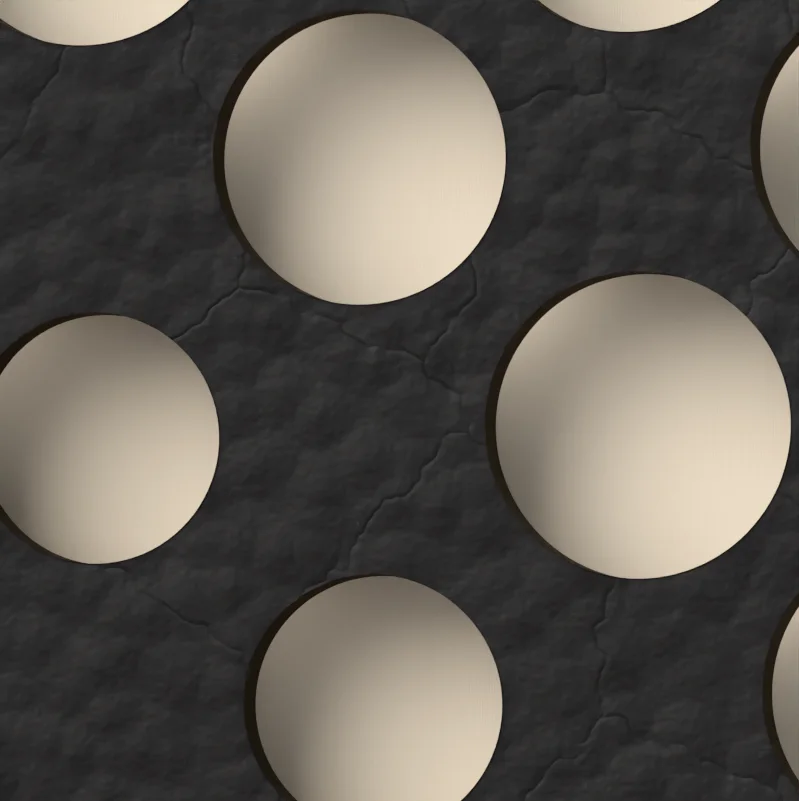
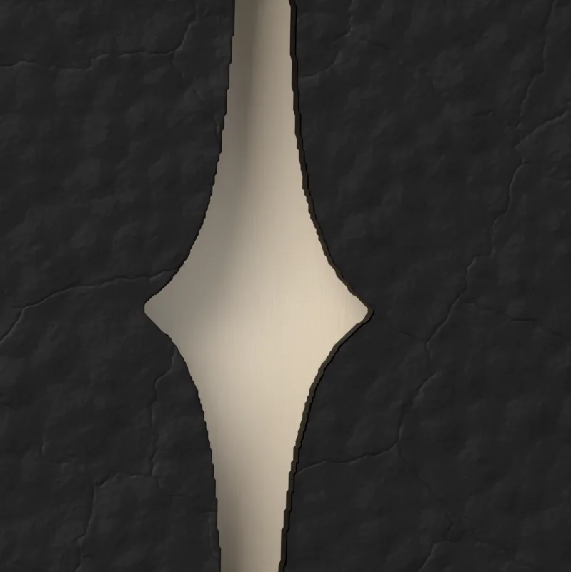
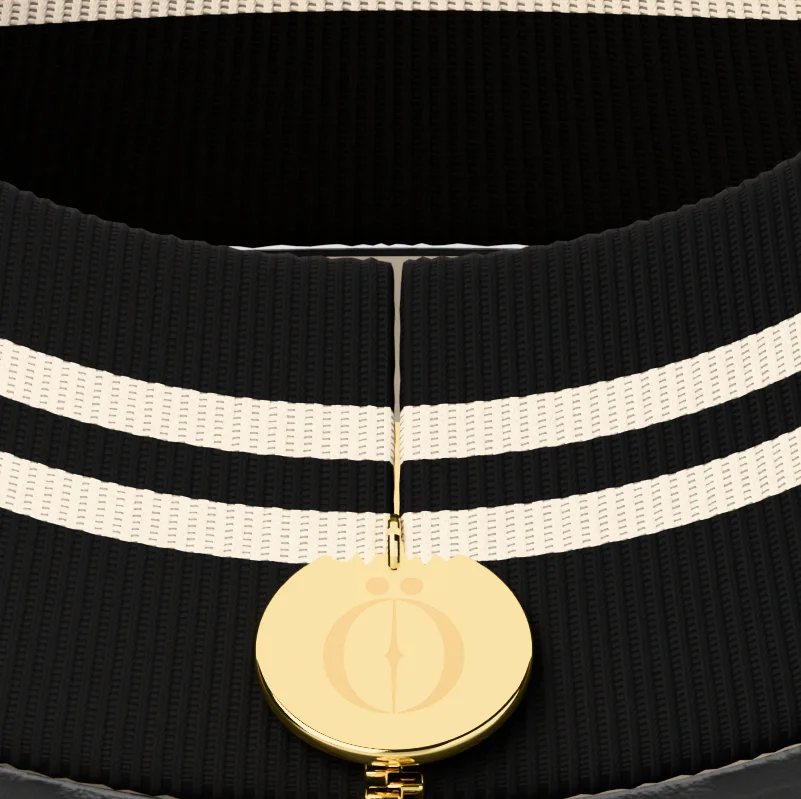
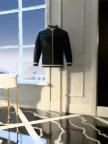

STAND-IN · img/odara/front/master.* (departments/apparel/new-pieces-2026-11/build/muse-bomber/site/muse_bomber_front_16k.png; 16K, 8640 × 15360)
STAND-IN · img/odara/three-quarter/master.* (three-quarter view, 8K; 8K, 4320 × 7680)
STAND-IN · img/odara/back/master.* (back view, 8K; 8K, 4320 × 7680)
STAND-IN · img/odara/open/master.* (the open view, 8K, the lining and the kiss, after the satin pass (open8k, 19c6ef39, is a stand-in: its satin is being redone); 8K, 4320 × 7680)
STAND-IN · img/odara/detail-holes/master.* (the holes and the silk, 8K close-up; 8K, 7680 × 4320)
STAND-IN · img/odara/detail-mark/master.* (the mark on her cheek, 8K close-up; 8K, 7680 × 4320)
STAND-IN · img/odara/detail-pull/master.* (the brass pull, 8K close-up; 8K, 7680 × 4320)Chapter I · Outerwear
Ödara
Leather bomber
Her portrait, drawn in small holes through black lambskin so the cream beneath shows her face. The Ö cut on her cheek, a brass zip with the Ö to close it.
- LEATHER
- BLACK LAMBSKIN
- LINING
- CREAM SILK
- RIB
- KNITTED JACQUARD
- ZIP
- BRASS, THE Ö PULL
- SIZE
- XS · S · M · L · XL
Price on request
ReserveMade to order. Delivery date confirmed by email.
Delivered in the house box.
Details
- Made to order
- Made to order. We email your delivery date once production is confirmed. Cancel for a full refund any time before production starts.
- Returns
- Exchanges within 14 days of delivery, unused and with tags. Returns
- Care
- Wipe with a soft dry cloth. Keep from rain and heat; if it gets wet, let it dry slowly away from a radiator. Store in its dust bag, stuffed with tissue, out of the light. Leather cleaning by a specialist only. Care
- Size
- The measurements

STAND-IN · img/odara/world/master.* (C10: the last frame, the world plate (the suite, at dusk); 8K, 5760 × 7680)Where it is going · C10
The suite, at dusk
Two glasses on the sill, one poured.
On the screen in the film, the picture is tomorrow: each piece in the place it is going, with one place kept for someone.
The maker’s notes
Ödara, the Muse Bomber
- It begins as five pieces of black lambskin: two fronts, one back, two sleeves, 0.88 m² in all.
- The back is cut through as round holes on a 5 mm screen at 45 degrees; her tone sets each hole’s size.
- No hole is over 4 mm or under 0.7 mm, and none comes within 15 mm of a seam.
- The mark is cut whole on her cheek, 39.5 mm tall, with 2.5 mm of solid leather round it.
- Collar, cuffs and hem are the house 1x1 rib, with two 5 mm cream stripes 5 mm apart.
- It closes on a brass zip, teeth at 3.2 mm, its pull a 24 mm disc engraved with the mark.
Inside it: cream silk charmeuse. On the lining of the back, a kiss printed in black, 30 cm wide.
Read the poem